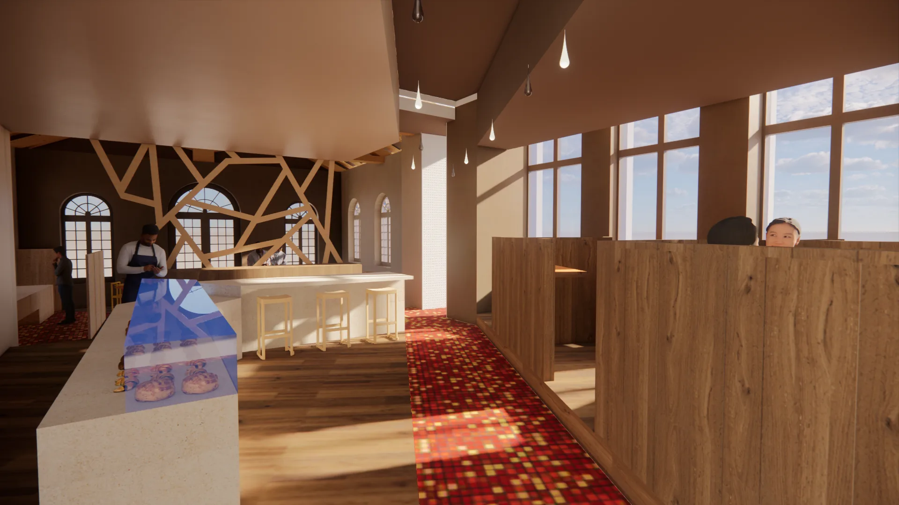

May’in
Architecture intérieure · Design · Scénographie
Intention
Des lieux pensés à partir de leurs usages.
Chaque projet commence par le lieu, ses contraintes et l’attention portée à celles et ceux qui vont l’habiter.

Architecture intérieure · Design · Scénographie
Intention
Chaque projet commence par le lieu, ses contraintes et l’attention portée à celles et ceux qui vont l’habiter.